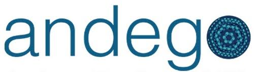
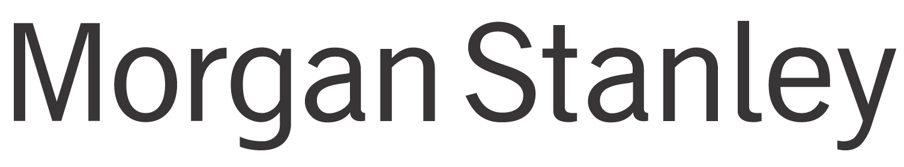
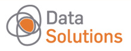

satRday #1
September 3 2016
MTA TTK, Budapest, Hungary

Latest News

(Almost) Final Conference Program (Aug 21 2016)
We are extremely excited to publish the final list of talks and prelimenary schedule of the conference. As this being a community-driven conference, we are looking forward to your feedback!
Data Visualization Challenge (Aug 18 2016)
Our gold sponsor provided an interesting dataset on the flights to and from BUD between 2007 and 2012, which is to be used at our first Data Visualization Challenge. Submission are due to Aug 31 2016, and you can apply with a single plot, full-blown dashboard or any other visualization project to win valuable prices. Dataset last updated on Aug 20.
The conference is funded -- thanks to our generous sponsors! (Aug 13 2016)
We are extremely grateful to all our sponsors: their financial support (paying for 3/4 of the overall costs) and commitment were essential to bring this event to life!
End of early-bird discount, 90% of tickets gone (July 16 2016)
The early bird period closed with a great success: sold ~90 percent of the originally planned 150 tickets.
Call for Papers deadline extended (July 3 2016)
Although we already have an impressive number of exciting workshop, regular/lightning talk and poster submissions, we extend the Call for Papers deadline by a week (July 10 2016) due to the numerous related requests.
Registration open (June 20 2016)
The registration form is now open with extremely affordable early-bird tickets until July 15.
Call for Papers (June 15 2016)
The abstract submission form is now open until July 3 -- please submit your proposals on workshops, regular or lightning talks and posters.
Keynote speakers announced (June 15 2016)
We are extremely happy to announce the first two confirmed speakers of the conference: Gabor Csardi and Jeroen Ooms will give the keynote talks on trending and important R topics at the first satRday event.
The first official news on the conference (June 1 2016)
The first satRday event will be held in Budapest, Hungary on the 3th of September 2016. More information on the venue, invited speakers, call for papers etc are to be announced in a week or two. Stay tuned!
About the Conference
The satRdays are SQLSaturday-inspired, community-led, one-day, regional and very affordable conferences around the world to support collaboration, networking and innovation within the R community.
The first satRday conference will be held in Budapest, Hungary with support from the founders and organizers of the Budapest Users of R Network and financial support from the R Consortium and below sponsors.
Our main goal with this conference is to
- provide an affordable learning and networking experience to a great number of R users in and around Hungary
- demonstrate the need of such regional conferences
If you want to get in touch with the local organizing committee, please feel free to mail us:
Sponsors
We thank all our generous sponsors for supporting this conference -- their financial help and great commitment to the R community is highly appreciated and was essential to bring this event to life! Please find below the list of our partners per sponsorhip level, and we kindly ask you to visit their homepages to get some quick insights on what are they doing and how they use R:
Platinum

Gold
Silver
 Bronze

Important Dates
Please find below the most important milestones of the conference based on the prelimenary schedule:
| Event | Date |
|---|---|
| Workshop Submissions Deadline | |
| Abstract Submissions Deadline | |
| Notification of Acceptance | 2016-07-13 |
| Early-Bird Registration Deadline | 2016-07-15 |
| Dashboard Competition Project Submission Deadline | 2016-08-31 |
| Registration Deadline | 2016-08-31 |
| Workshops | 2016-09-03 8:00-9:30 |
| Conference | 2016-09-03 10:00-19:00 |
Registration
To minimize the financial barriers of attending to this satRday event, we decided to keep the registration fees as low as possible and we are very happy to announce the below fee structure that is supposed to be affordable to even students and other interested parties paying for the registration on their own:
| Student | Academic | Industry | |
|---|---|---|---|
| Early bird registration (until July 15 2016) | 3,000 HUF (<10 EUR) | 3,000 HUF (<10 EUR) | 6,000 HUF (<20 EUR) |
| Standard registration (until Aug 27 2016) | 5,000 HUF (~16 EUR) | 5,000 HUF (~16 EUR) | 10,000 HUF (~30 EUR) |
| Late and on-site registration | Not available. | ||
Registering for the event and purchasing a ticket entitles you to attend a workshop in the morning, all conference talks, a lunch at noon and 2 coffee breaks with no hidden costs. VAT included. You can pay by PayPal (including easy payment options with credit/debit card and wire transfer), but please get in touch if you need any special assistance with the payment, invoice etc.
Why would you wait any longer? Register for the event today -- the number of available spots are limited!
Keynotes
We are extremely happy to announce that we will have two fantastic keynote speakers at the conference -- both are very prolific R package developers, with almost 70 packages published by two of them on CRAN:
at Mango Solutions (UK)
at UC Berkeley, rOpenSci (USA)
Confirmed Speakers
Please find below the not yet complete list of speakers, which is to be updated on a regular basis after sorting out some of the logistics:
at Secret Sauce Partners (HUN)


at Synetiq Ltd (HUN)
and InveRness RUG org (UK)
at Andego Tanácsadó Kft. (HUN)
Wigner Research Centre for Physics (HUN)
at Open Analytics (BEL)
RUMM Ltd (UK)
at Appsilon (POL)
at FRISS (NL)
at University of Lausanne (CHE)
at Data Relish Ltd (UK)
Central European University
at H2O.ai (UK)
at Mango Solutions (UK)
and researcher
at Dutch National Statistics (NL)
at CensorNet (UK)

at MARISAN (BGR)
Geological and Geophysical Institute (HUN)
at GoDataDriven (NL)
Workshops
There is no separate extra fee for attending workshops, you just need to register for the conference. We encourage everyone to attend so that we take full advantage of our capacity. The list of planned 1.5 hours long workshops/tutorials:
| Title | Presenter |
|---|---|
| A systematic approach to data cleaning with R | Mark van der Loo |
|
There are two data-cleaning related factoids that are quoted often on the web: 80% of the data is unstructured, and about the same fraction of time is spent on data cleaning. Although there is little systematic research to substantiate these claims, most data analysts will agree that getting data 'clean' for analyses is both essential and time-consuming. In this 90 minute tutorial we develop a systematic view on data cleaning. Using the concept of a 'statistical value chain' as starting point, we will see that data cleaning has a natural place in a statistical analyses and that data cleaning can be thought of as a two-step process. In the first step one ensures the correct technical representation of a data set (variable type, text encoding, identifiability of a value, etc.). The second step is about ensuring that data meets expectations from domain knowledge (e.g. ages must be positive, an under-aged person cannot have an income from work, etc.). In this tutorial we will demonstrate, using practical examples, several tools and R packages that can be used to solve both technical and content-related issues. Topics include but are not limited to string processing and approximate text matching, date/time conversion and knowledge-based data validation and correction. We also touch upon how to measure and visualize data quality and the effects of data cleaning on statistics. | |
| Scalable Machine Learning with H2O | Jo-fai (Joe) Chow |
|
The focus of this tutorial is scalable machine learning using the H2O R package. H2O is an open source, distributed machine learning platform designed for big data, with the added benefit that it's easy to use on a laptop (in addition to a multi-node Hadoop or Spark cluster). The core machine learning algorithms of H2O are implemented in high-performance Java, however, fully-featured APIs are available in R, Python, Scala, REST/JSON, and also through a web interface. Since H2O's algorithm implementations are distributed, this allows the software to scale to very large datasets that may not fit into RAM on a single machine. H2O currently features distributed implementations of Generalized Linear Models, Gradient Boosting Machines, Random Forest, Deep Neural Nets, dimensionality reduction methods (PCA, GLRM), clustering algorithms (K-means), anomaly detection methods, among others. The ability to create stacked ensembles, or ""Super Learners"", from a collection of supervised base learners is provided via the h2oEnsemble R package. R scripts/notebook with H2O machine learning code examples will be demoed live and made available on GitHub for attendees to follow along on their laptops. | |
| Data manipulation the #rdatatable way | Arun Srinivasan |
Package overviewThe data.table R package provides fast and memory efficient ways for data manipulation together with a flexible and consistent syntax. It was first released to CRAN in 2006. It has had over 30 releases since then with the current latest stable release being v1.9.6. Over 240 CRAN and Bioconductor packages now import/depend on data.table. Its StackOverflow tag has attracted >4000 questions from users in many fields making it a top 3 asked about R package. It is the 8th most starred R package on Github. Tutorial overviewIn this tutorial, we will learn data.table by doing, i.e., by looking at commonly occurring data manipulation questions (based on StackOverflow R tag) and using data.table's syntax and features to solve them. Depending on time availability, we might compare/contrast them to base R / other packages. Briefly, we will look at problems that cover the following features:
Background knowledgeFamiliarity with base R is essential, and with SQL is advantageous but not essential. NOTE: It would be extremely advantageous for the participants to go through the "Introduction to data.table" vignette completely. The link to vignettes is provided at the bottom of this page. RequirementsR (preferably latest version, for consistency) and latest CRAN version installed. Links | |
| Intro to Shiny | Kate Ross-Smith |
|
An introductory workshop that takes delegates from little or no knowledge of shiny to being able to create your own app and RStudio add-in. We will focus on what you need to get started, and how keep to good coding practice. You do not need to have any previous knowledge or experience of shiny. | |
| Advanced Shiny dashboard topics | Herman Sontrop |
|
Shiny is a web application framework that makes it easy to build interactive web applications straight from R. A key feature of shiny is that users can create powerful apps driven by R without having to know HTML, CSS or JavaScript. However, incorporating these technologies into your apps can greatly enhance the power of shiny. In this workshop we’ll teach you how to create your own custom JavaScript bindings based on the htmlwidget package. The htmlwidgets package provides a framework for creating such bindings and allows you to bring the best of JavaScript into R. Even though using an htmlwidget is easy, constructing one may be challenging at first as you have to know a number of concepts in order to create a widget. These include things such as how to build an R package and how to use some basic JavaScript, CSS and HTML. This workshop is intended for the intermediate shiny enthusiast with limited experience in HTML, CSS and/or JavaScript, who wants to learn how to extend shiny. We’ll be creating a number of htmlwidgets based on C3.js, a popular JavaScript chart library, based on d3.js. In addition, we show various ways to extend Shiny by using JavaScript outside of the htmlwidgets framework. | |
| Joy of ggplot2 | Vincent Warmerdam |
|
GGplot2 is such a great plotting tool that people consider using R just for the library. In this session we will demonstrate why it is such a great tool for plotting. We will emphasis the joy of working with ggplot by emphasising how visualisations with ggplot have the ability to surprise you. In this session we will start by doing a very basic analysis and we will conclude with the power of having a grammar for visualisation instead of just a mere plotting library. All code will be available afterwards. Visualisations have the power to surprise you during your day to day work. At the end of the session I will give examples of how proper use of ggplot during your analysis makes you a better analyst. | |
Please note that no computers will be provided at the workshops, so we recommend bringing your own computer.
Schedule
| Start | End | Session |
|---|---|---|
| 7:45 | 8:00 | Early registration for the workshop attendees |
| 8:00 | 9:30 | |
| 9:30 | 10:00 | Registration and coffee break |
| 10:00 | 10:10 | Conference opening |
| 10:10 | 11:00 |
Keynote #1
Gábor Csárdi
|
| 11:00 | 12:40 |
R infrastructure session
Steph Locke: Infrastructure for R peeps
Continuous integration, Docker, openCPU, shiny server, RStudio server, Microsoft R Server, R in Hadoop, your laptop, your grid computer ... There's a lot of infrastructure out there and someone has to configure it. This session whistle-stops through networking, Linux basics, and other key concepts to help get you up to speed because one day, the person configuring the server could be you. Ágnes Salánki: Use The Right Tool — R in Infrastructure and Business Analytics
R provides an immense amount of packages (which is not surprising, considering how awesome community it has), it supports nearly everything from effective data visualization through web scraping to the weirdest applications, like getting your favourite XKCD comics. No wonder that the really dedicated users -- independently from the exact domain they work in -- hardly ever need to switch to other environments while doing analytics-related tasks. The talk will cover my personal swiss army knife toolsets I use for infrastructure and business analytics. It will show:
Filip Stachura: Workflow around modelling in Data Science / R
Working as a data scientist usually means working with data, building models, evaluating the results, translating them into actionable insights, getting feedback from experts and repeating the process. Hardly ever one starts with the model that finally will be used in production. It is usually trial and error process of trying new things and experimenting. That’s why data science project could get disorganized rapidly. Every test involves a new script, each script requires a multiple arguments and produces one or more data files. Keeping track of all this implied structure is a pain. The talk stresses the importance of having a process around data science related tasks, while keeping the main focus on creating a data product. We demonstrate the implementation of the light data science workflow - Dataflows. Dataflows allows R users to create pipelines, without writing extra code, is self documenting and easy to start working with. During the talk we show the benefits of formalizing and structuring the process of model building in R. We mention the bottlenecks, propose solutions and biggest wins accomplished by introducing Dataflows. We strive to share our hands-on experience from various data science projects using R. András Tajti: Door to door fraud detection
R is the most popular statistical programming language, partly because its capability of a lot - and still increasing number - of other tasks. The talk will not care about statistical analysis, but will care about automatization, reading and uploading from and to FTP and SFTP server, reading and editing MySQL locally or through SSH, platform-independent development. Tries, cathes, roads to (sub)optimal solutions. I will present my experience in developing an automated fraud detection system, which shares data with the insurance company through an FTP server. After downloading, it identifies customers using basic personal information and company informations. The next (relatively easy) step is computing different features used for scoring claims, then create a conditionally formatted, multiple-sheet excel file with data about the freshest claims, which will be sent as e-mail attachment to the insurance company. All results will be uploaded to an FTP server for further processing by an interactive reporting system. Be prepared for system calls, MySQL query asssembling, graph creating, memory management and some data.table magic. Tomaž Kaštrun: R Integration into SQL Server 2016
Session will show the Usage of R Language in SQL Server 2016 database system with it's T-SQL language support. We will cover using simple to multivariate statistics against typical transactional database data, log data and monitoring data. Are you data analyst or DBA or developer? Join and learn how to combine both worlds. |
| 12:40 | 13:40 | Lunch |
| 13:40 | 15:00 |
R packages session
Arun Srinivasan: New developments in the #rdatatable package
Data manipulation operations such as subsets, joins, aggregations, updates etc. are all inherently related. By keeping these related operations together, data.table’s syntax provides powerful set of features and enables fast and memory efficient data analysis. In this talk, I will discuss the philosophy behind data.table’s syntax and showcase how its unique features allow for straightforward code while highlighting the new features that were recently implemented. Mark van der Loo: Data validation with the "validate" package
In most situations a statistical analyst has no or only limited control over the process that generates the raw data to be analyzed. Testing assumptions about raw data, intermediate and final results is therefore an essential part of any statistical analyses. Often, such domain knowledge can be expressed in short statements such as 'age must be non-negative' or 'if two persons live at the same postal code, they live in the same city'. The 'validate' package makes it easy to formulate such assumptions, confront your data with these assumptions and subsequently to summarize or visualize the results in a transparent and reproducible way. In particular, 'validate' treats knowledge rules as first class citizens which means that they can be manipulated, documented, and stored and retrieved from file. In this talk I will give an overview of the data validation infrastructure that the package offers, how it might be used, and I will highlight some upcoming developments. Romain François: A dplyr use case
A data manipulation case study using the dplyr syntax, probably using data from the Bechtel Test website about representation of women in the movies industry. Lightning talks
Bo Werth: nsoAPI - retrieving data from National Statistical Offices with R
National Statistical Offices have started setting up web services to provide published information through data APIs. Even though international standards exist, e.g. SDMX, the majority of NSOs create their individual API and few use existing community standards. nsoAPI is an attempt to create a single package with functions for each provider that convert a custom data format into an R standard time series format ready for analysis or further transformation. https://www.gitbook.com/read/book/bowerth/opendata-tables lists tables that can be retrieved from SDMX (International Organizations, ABS: Australia, INEGI: Mexico, INSEE: France and ISTAT: Italy, NBB: Belgium), the pxweb package (PXNET2: Finland, SCB: Sweden) and the nsoAPI package (BEA: USA, CBS: the Netherlands, GENESIS: Germany, ONS: UK, SSB: Norway, STATAT: Austria, STATBANK: Denmark). With the exception of France, large countries tend to set their own standards. The BEA (USA) and ONS (UK) require the user to create an ID that needs to be submitted with each request. GENESIS (Germany) require the user to pay 500 Euros per year (250 Euros for academic users) to access the API. Viktor Tachev: The effect of High-Frequency Trading activity on volatility in systemically important ETFs
The aim of the research paper is to track the relationship between the rapidly-growing High-Frequency Trading activity and the dynamics in volatility levels for the most actively traded and systemically important ETFs. The source for the intraday data that I work with is Bloomberg®. The time period is 2006 - 2016. The summarized research methodology is as follows:
The generated results indicate that HFT activity results in increased volatility in more than 70% of the analyzed ETFs, directly affecting other investors, including pension funds and insurance companies. R Packages used: tseries; zoo; xts; quantmod; timeSeries; TTR; PerformanceAnalytics; lmtest; vars; egcm; rugarch Iegor Rudnytskyi: estudy2: an R package for the event study
The impact of relevant events on the stock market valuation of companies has been the subject of many studies. An event study is a statistical toolbox that allows to examine the impact of certain events on the firms' stock valuation. Given the rationality of market participants, the prices of securities immediately incorporate any relevant announcements, information, and updates. The idea of the event study is to compare the market valuation of the companies during periods related to an event and other (non-event linked) periods. If the behavior of stocks is significantly different in the event-period, then we conclude that an event produces an impact on the market valuation, otherwise we conclude that there is no effect. The major stream of research is focused on the insurance industry and catastrophe events, therefore, the cross-sectional dependence cannot be neglected. Furthermore, the returns typically are not normally distributed. These points lead to misspecification of the classical parametric tests, and require to validate the results by more tailored and accurate tests (both parametric and nonparametric). In order to incorporate all these issues we developed the package estudy2 (planned to be submitted to CRAN by August 2016). First, estudy2 incorporates all technical aspects of the rate of return calculation (the core computation is done in C++ by using Rcpp). Also the package incorporates 3 traditional market models: mean-adjusted returns, market-adjusted returns, single-index market model. Finally, 6 parametric and 6 nonparametric tests of daily cross-sectional abnormal return have been implemented. In addition, the package contains the tests for cumulative abnormal returns (CAR). In the proposed talk we demonstrate an example from current research, namely, the impact of major catastrophes on insurance firms' market valuation in order to validate the specification of the tests. |
| 15:00 | 15:50 |
Keynote #2
Jeroen Ooms
|
| 15:50 | 16:20 | Coffee break |
| 16:20 | 17:45 |
Machine Learning session
Jo-fai (Joe) Chow: Scalable Machine Learning with H2O
Andrew Lowe: Machine learning for particle physics using R
Search strategies for new subatomic particles often depend on being able to efficiently discriminate between signal and background processes. Particle physics experiments are expensive, the competition between rival experiments is intense, and the stakes are high. This has lead to increased interest in advanced statistical methods to extend the discovery reach of experiments. This talk will present a walk-through of the development of a prototype machine learning classifier for differentiating between decays of quarks and gluons at experiments like those at the Large Hadron Collider at CERN. The power to discriminate between these two types of particle would have a huge impact on many searches for new physics at CERN and beyond. I will discuss why I chose to perform this analysis in R and how switching to R has helped my work. Ágoston Török: Time series analysis in R: using hidden Markov models for unsupervised learning
Analyzing time series data is imminent in econometrics, weather forecasting, speech analysis, biosignal processing, and several other disciplines. Time series analysis consists of multiple techniques for data cleaning and pattern recognition. In this talk, I will present hidden Markov modelling (HMM) — a common unsupervised learning method — and show how it can facilitate the discovery of meaningful patterns in time series data. Hidden emotional and cognitive states were explored using the depmixS4 package in R (Visser & Speekenbrink, 2016, doi: 10.18637/jss.v036.i07) in a dataset of multimodal (EEG, GSR, HR) recordings while participants watched emotional videos. Using hidden Markov modelling we were able to identify emotional states and their dynamic transitions. We will discuss the issues of validation, reliability, and limitations of this approach and its implementation. Thomas Levine: Practical music synthesis for multivariate data analysis in R
With modern advances in computing and the increasing abundance of digital data, it is becoming both feasible and necessary to expand our data analysis methods beyond conventional mathematical modeling and data visualization. Music and other emerging data analysis paradigms present the opportunity to represent high-dimensional data in intuitive and accessible forms. In this talk I will introduce the concept of plotting data as music and demonstrate some end-user music synthesis tools that are available within the R ecosystem. Lightning talks
Jenő Pál: Uncovering political connections of firms using machine learning methods
Political connections can have a profound influence on the success and profitability of firms. However, discovering these connections are difficult since firms typically try to hide their political ties from the public. We link data on local and parliamentary elections to administrative data about firms to create features that can be indicative of political connections. Applying machine learning algorithms we build classification models with the goal of identifying political leaning of Hungarian firms at a large scale. We use R for all parts of the project, starting from data wranging through visualization to building and evaluating machine learning models. Packages used include data.table, dplyr, ggplot2 and caret. |
| 17:45 | 18:15 | Coffee break |
| 18:15 | 19:30 |
R use-cases session
Jen Stirrup: R and Python — PoweR Tools to make you a Data RockstaR
R and Python are your secret poweR tools for data RockstaRdom. Together, these tools equip enterprises to deliver real, robust predictive analytics. We will look at how these PoweR tools can complement each other in practical situations. This is an intensive, practical session with relatable examples to empower business intelligence professionals to move into the realm of predictive analytics, making the ability to deliver enterprise, actionable analytics accessible to everyone. Kate Ross-Smith: How can I get everyone else in my organisation to love R as much as I do?
Learning R is dangerous. It entices us in by presenting an incredibly powerful tool to solve our particular problem; for free! And as we learn how to do that, we uncover more things that make our solution even better. But then we start to look around our organisation or institution and see how it could make everyone's lives better too. And that's the dangerous part; R's got us hooked and we can't give up the belief that everyone else should be using this, right now. Even though R is free, open source software, there are often barriers to introducing it organisation-wide. This could be because of such things as IT or quality policies, the need for management buy-in or because of perceptions in learning the language. This presentation will first discuss the aspects required to understand these barriers to entry, and the different types of resolution for these. It will then use three projects to show how, by understanding the requirements of the organisation, and developing situation-specific roll-out strategies, these barriers to entry can be overcome. The first example is a large organisation who wanted to quickly (within 6 weeks) show management how Shiny could improve information dissemination. As server policies made a proof of concept difficult to run internally, this project used a cloud hosted environment for R, Shiny and a source database. The second example is around two SME's who required access to a validated version of R, which was provided via the Amazon and Azure marketplaces. The key aspect of these projects is the value to IT departments of being able to distribute a pre-configured machine around the organisation. Herman Sontrop: Using R and Shiny at FRISS
Lightning talks
Áine Uí Ghiollagáin: RUG Toolbox
R is (for some of us at least) easier to use than to learn. It can also be difficult to keep up with new packages and other developments. R User Groups can help with both these challenges, as well as help members develop other skills (presentation, organisation, and networking), yet there is little enough helpful administrative or other support (templates, suggestions, or policies) for new and established groups. This lightning talk proposes to introduce the framing of a RUG Toolbox, a collection of templates and case studies, contributed by R users and R user groups, collated and made available on GitHub, which can help groups start, plan, develop and join R networks locally and further afield. David Parr: Got r? Catch 'em all!
Collecting Pokémon data from websites using rvest Zsuzsanna Szabó: Visualization of geochemical modeling results by R
I use the software PHREEQC for modeling rock-water interactions. The output of these geochemical models are several types of complex data tables depending on weather I run thermodynamic mixing, kinetic and reactive transport models. By the increasing number of model runs, automatization of the figure production, easy visualization of output sensitivity on model parameters became necessary, as well as presentation of reactive transport of water in rock by not only figures, but also GIF animations. For these, I use R packages dplyr, reshape2, ggplot2, animation and graphics. I present code, the resulting figures and GIF animations of chemical changes in water while it flows through cells of defined rock, as well as indicated mineral dissolution and precipitation processes in space and time. I also mention R packages PHREEQC and ReacTran to better present the capability of R in the field of geochemistry. |
| 19:30 | 20:00 |
Data Visualization Challenge with pizza on the side
|
Data Visualization Challenge
Our gold sponsor, the BI Consulting team, provides an impressive dataset coming from the Hungarian Central Statistical Office on the flights to and from the Budapest Ferenc Liszt International Airport between 2007 and 2012 to the interested parties to do exploratory data analysis projects in the means of a data visualization competition.
Guidelines for participating in the contest:
- Only registered conference attendees can take part in this contest
- You must use R to load, process and visualize the data
- The submission can be a simple plot or a full-blown dashboard using any R-based package as a standalone app, a single image, series of plots, animation or integrated into other projects
- You are willing to release the source code of your analysis with an open-source license
- Prepare a (min) 1-page summary on your submission, eg what is shown (feel free to include plot(s), screenshots) and why it is cool, interesting etc. You can also include links to the source code and to the live visualization if it is available on the web.
- Submissions are to be send to the rdataviz@biconsulting.hu e-mail address before Aug 31 2016 midnight CET
The submissions will be reviewed by a committee of industry BI experts and R developers, nominated by the BI Consulting team. Their task will be to filter the applications to a reasonable amount of projects to be shown in a live session at the conference, where the attendees will vote for the best submission. The winner(s) of the challenge will receive a certificate, valuable prices (eg Budapest BI Forum conference ticket) and the honour to be the best damn data visualization wizards of the first satRday conference all around the world!
You can download the dataset here (updated: Aug 20 2016). Yes, it's an Excel file with a space in the file name. If you have any question about the challenge, Bence (rdataviz@biconsulting.hu) will be happy to help.
Answers to some frequently asked questions:
- Rows are monthly aggregates per origin/destination
- Cargo weight is in metric ton
- The "NBR OF PASSENGERS", "CARGO WEIGHT", "NBR OF FLIGHTS" and "SEAT CAPACITY" columns are sum amounts for all flights in the month
- Based on the above, it's possible that "SEAT CAPACITY" / "NBR OF FLIGHTS" returns a non-integer value, as the number of seats per flight varies
May the ETL, modeling and dataviz gods be with you!
Campus

The conference will take place in the Research Centre for Natural Sciences of the Hungarian Academy of Sciences, which is a modern building in Infopark, Budapest -- located on the riverside of Danube.
The venue features a large room for the plenary talks with up to 250 attendees, which can be split into two smaller rooms for the parallel sections. Besides this main room, we will have access up to 6 workshop rooms as well.
Please stay tuned for more information after we managed to confirm the spot and get some time to do some more content management on this site.
Lodging
Budapest offers many different accommodation options for backpackers, business travellers, tourists etc, please feel free to browser hotels, youth hostels, guesthouses and so on eg on booking.com, szallas.hu or Airbnb.
Update: we previously used to recommend Visit Kollégium for budget accomodation not too far from the conference venue with discounted prices, but they turned out to be extremely unprofessional and a real PITA, as they basically canceled all our reservations out of the blue, so we suggest everyone to look for some other options.
Travel Information
You can reach Budapest in a variety of different ways:
- train from Déli pályaudvar (Southern railway station), Keleti pályaudvar (Eastern railway station) or Nyugati pályaudvar (Western railway station)
- coach from Népliget busz pályaudvar (coach station)
- flights landing at Liszt Ferenc Airport
- motorways M1 (E60, E75) or M7 (E71), M3 (E71) or M5.
Please click on the above references to see the timetables, plan a trip and to check the related Google Maps on how to reach the conference building from these locations.
Cabs are called "taxi" in Hungary and have a standard fare of:
- base fee (450 HUF)
- distance charge (280 HUF/km)
- waiting fee (70 HUF/min)
But you can also use Uber, and public transportation is also pretty good and much more affordable -- eg you can take bus E200 from the Airport to Kőbánya-Kispest, then the Metro (underground) to Corvin-negyed and tram 4 or 6 (3 stops that you can easily do on foot as well) for around 3-5 USD overall and usually in less than an hour.
Call for Papers
The abstract submission form is now openclosed since July 10.
Why should you consider giving a talk?
- speakers register for free,
- we might provide financial support to reimburse travel/accomodation expenses,
- there's a fantastic R community in Hungary looking forward to attending good R talks in English,
- get quick feedback on your proposal -- we will notify everyone before mid-July,
- and most importantly: you will never have the chance again to speak at the first satRday event around the world!
Please feel free to submit one ore more proposal(s) in English on the above URL with the following presentation formats:
- Workshop (90min): Tutorial for 5-20 (or more) persons on a beginner or advanced R topic
- Regular talk: Abstracts accepted for talks will take place during oral sessions. Each talk is allowed 20 minutes for the presentation including questions and answers.
- Lightning talk (5min): A variation of the pecha kucha and ignite formats that we love at the useR! confereces: 15 slides shown for 20-20 seconds.
- Poster: Abstracts accepted for posters will take place during an afternoon poster session, which is a social event. There are no parallel talks or events happening, so everyone can talk and stop by posters they are interested in. The dimensions of each poster should not exceed 4' x 4' or 120cm x 120cm.
IT & AV Provision
Workshops
Presenters of workshops are advised that each workhop room is equipped with internet connection (Wi-Fi) and a large LCD screen (HD or FullHD resolution) with an HDMI connector. Presenters must bring their own laptops.
Oral Talks
Presenters are advised that each session room is equipped with:
- Internet connection (Wi-Fi)
- Desktop PC (Windows 7 with MS PowerPoint and Adobe Acrobat Reader)
- Data projectors (XWGA: 1280 x 800 px, 16:10) with HDMI (preferred) or VGA connectors
If possible, please bring a copy of your presentation on USB stick and upload it to the PC in advance of the session. Use your own laptop only if it is really required. An IT/AV technician and conference assistants will be available on-site.
Social Program
Please stay tuned, but keep calm -- we know a bunch of ruin pubs with good craft beer and good wine in Budapest. To get informed, please sign-up to the conference mailing list on the top of this page.